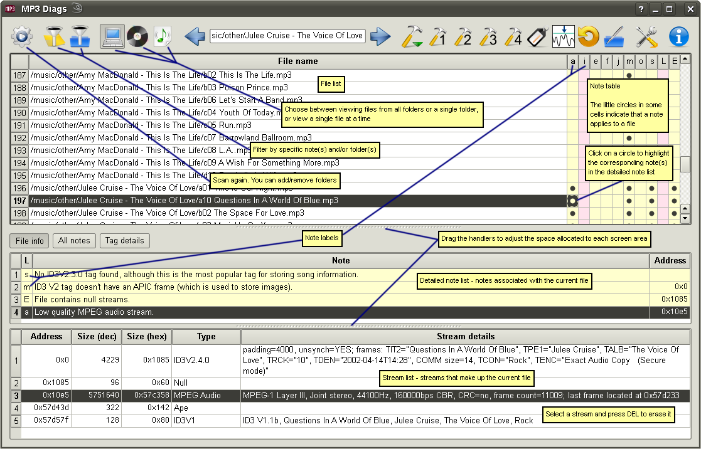

After scanning completes, you see the main window, having a table with files (and quite likely "notes") in the upper part of the screen and tables with the "notes" and "streams" of the current file in the lower part.
A "note" is a message about an MP3 file, usually describing something that is wrong with the file. There are 3 kinds of notes, based on their severity: error, warning and support. You probably want to fix the errors and think about warnings. The "support" notes simply indicate that a valid feature of an MP3 file is recognized as such, but the current version of MP3 Diags can't use it. There is nothing to do about them, except perhaps request for the feature to be supported. The main reason for not supporting a feature is that although I've found documentation about that fature, I don't have any file that uses it, so I don't know if my understanding is correct, and also if anybody actually needs that feature.
To make it easier to tell the notes apart, they are shown on differently colored backgrounds: pink for errors, pale yellow for warnings and cyan for support.
Another thing about notes is that they have a one-letter label, which is used for convenience, to make it easy to track notes from one part of the UI to another, or to report bugs / ask questions. Keep in mind that the background color is also important, as well as the case: "c yellow" has nothing to do with "c pink" or with "C yellow".
Notes may have addresses, which allow them to be connected to particular streams. (If you don't know what an address is, just ignore them.)
Although the order of the labels in the file table may seem random, they are actually sorted: there are several groups of related notes, and the grouping is preserved on the screen, keeping those related notes close together. The groups are:
| Audio |
| Xing and LAME |
| VBRI |
| ID3V2 |
| APIC |
| ID3V2.3.0 |
| ID3V2.4.0 |
| ID3V1 |
| broken streams |
| unsupported streams |
| unknown streams |
| Lyrics |
| Ape |
| others |
MP3 Diags has its own, rather rigid, idea about how an MP3 file should look like, and it will show errors or warnings for non-compliant files. A "good" file should contain these streams:
- an ID3V2 tag that meets the criteria described in the tag editor
- a LAME or Xing header; optional if the audio is CBR
- audio data
- optional ID3V1 tag
- optional (and ignored) Lyrics tag
- Ape tag containing normalization undo data
There are further restrictions on the order of the streams:
- if the ID3V2 tag is ID3V2.3.0, it must be the first stream in the file
- the LAME / Xing header is right before the audio
- ID3V1 and Ape tags are after the audio
You may want to ignore some notes, because they are irrelevant in your particular situation. This can be achieved via the
configuration dialog . Several notes are ignored by default. For example, fields in an ID3V1 tag are supposed to be padded with zeroes to the right to fill their fixed-size allocated space, but some tools use spaces instead (well, there are also other sites saying that padding should be done with spaces.) All the tools that I looked at don't really care about this requirement, and work equally well whether the padding is done with spaces or with zeroes. For this reason, several notes about zeroes in ID3V1 tags are ignored by default. If you have a tool that cares about zeroes, you should remove those notes from the "ignored" list.
You can do useful things with MP3 Diags even if you don't know what an address is or how to read the hex number that represents an address. However, in these cases you're more likely to mess things up, so you should be extra careful.